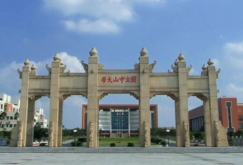
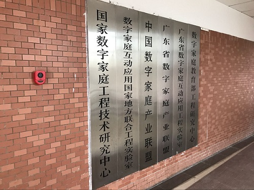
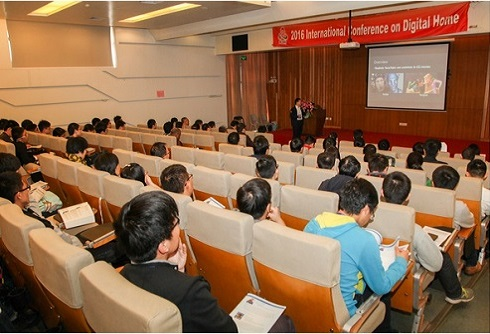
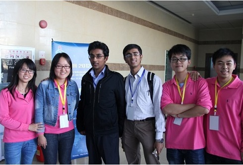
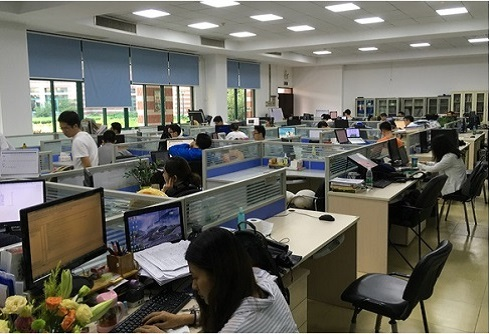

NERC-DL Introduction
National Engineering Research Center of Digital Life (NERC-DL) is approved by China Ministry of Science and Technology on January 2011, and is established by Sun Yat-sen University and TCL Corporation together.
Research Center conducts deep research on computer graphics, multimedia computing, vision and image processing, software engineering, mobile computing, visualization, machine and deep learning, etc.
The Center has published lots of high-quality papers in top rank academic journals and conferences, including ACM/IEEE Trans., ACM SIGGRAPH (Asia), ACM Multimedia, Elsevier, Springer, etc.
- 
- 
- 
- 
- 
Major Research Interest
News and Events
- The PhD candidates research report seminar, 2017.09.19,In C402
- Fei Wang’s paper has been accepted by Pacific Graphics 2017
- Baoquan Zhao’s paper has been accepted by ACM Multimedia 2017
- Langyu Li’s paper has been accepted by IET Image Processing
Call For Papers
Deadline：2017.01.15
IEEE International Conference on Multimedia and Expo (ICME 2018)
Deadline：2017.12.01
IEEE Conference on Computer Vision and Pattern Recognition (CVPR 2018)
Deadline：2017.11.15
International Conference on Acoustics, Speech and Signal Processing (ICASSP 2018)
Deadline：2017.10.27
New Publications

Bilateral Filter
Ba Thai, Mukhalad Al-nasrawi, Guang Deng, Zhuo Su,
The semi-guided bilateral filter,
IET Image Processing,
Vol. 11, No. 7, 512-521, 2017, PDF
Aesthetic-based Cropping and Scaling
Yun Liang, Zhuo Su, Chuntao Wang, Dong Wang, Xiaonan Luo,
Optimised image retargeting using aesthetic-based cropping and scaling,
IET Image Processing,
Vol. 7, No. 1, 61-69, 2013, PDF